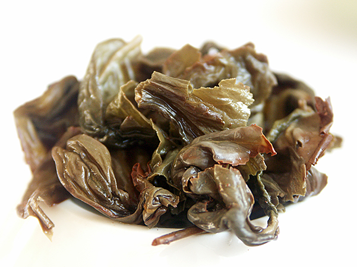

Aged Oolong
Typ: celolisty
Druh: Olong
Původ
Země původu: Čína
Oblast původu: Ming Jan
Pěstování
Nadmořská výška: 350 nm
Strom
Druh stromu: pestovany
Věk stromu:
Výroba
Sklizeň: 1. sklizen
Fermentace: castecne fermentovany
Oxidace: castecne oxidovany
Příprava Čaje
Množství: 5g
Voda
Množství: 350ml
Teplota: 85°C
Nalevy
vsechny nalevy 80 .
Nádobí
Materiál: Porcelan
Kalíšek
Průměr: 12cm
Hloubka: 8cm
Objem:
Konvička
Objem: 400
VRÁTIT SE